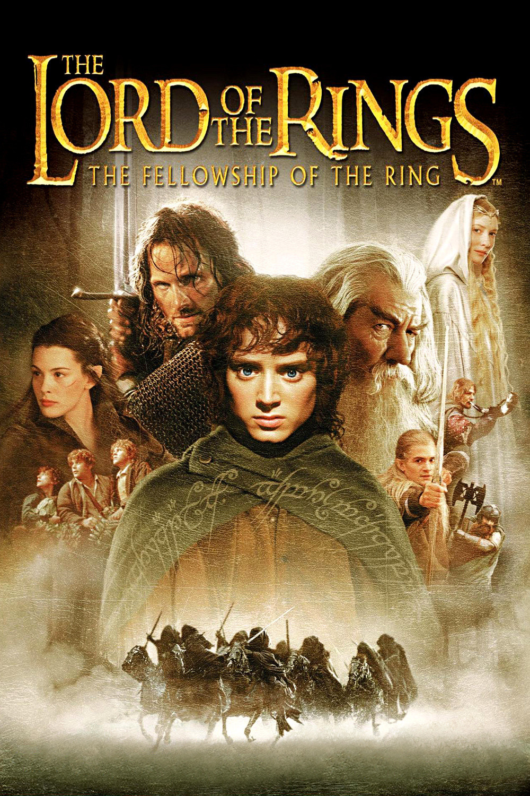

A journey of a hobbit along with eight companions on the journey to Mordor to end the one ring and save Middle-earth from the Dark Lord Sauron.
The One Ring, created by the Dark Lord Sauron, is lost for centuries before being found by the hobbit Bilbo Baggins. On his 111th birthday, Bilbo leaves the Ring to his nephew Frodo. Gandalf discovers that it is actually the One Ring and warns Frodo that Sauron is searching for it. Frodo leaves the Shire with Sam, Merry, and Pippin while Gandalf goes to Isengard to seek advice from Saruman, who has secretly joined Sauron and imprisons him.The four hobbits eventually reach Bree, where they meet a mysterious Ranger called Strider, who helps them escape the Ringwraiths and guides them toward Rivendell. At Weathertop, the Ringwraiths attack and wound Frodo. Arwen rescues him and brings him to Rivendell, where he recovers. Gandalf is also freed from Isengard and reaches Rivendell. During the Council of Elrond, it is decided that the Ring must be destroyed in the fires of Mount Doom. Frodo agrees to carry it, and eight companions join him, forming the Fellowship of the Ring: Sam, Merry, Pippin, Gandalf, Aragorn (Strider), Legolas, Gimli, and Boromir. The Fellowship first attempts to cross the mountains but is forced to travel through the Mines of Moria. There, they discover that the dwarves who lived in the mines are dead and are attacked by Orcs and a Balrog. Gandalf fights the Balrog on the Bridge of Khazad-dûm and falls into the depths, leaving the Fellowship devastated. They then reach Lothlórien, where Galadriel warns Frodo about the danger of the Ring and shows him a vision of what could happen if he fails.The Fellowship continues down the Anduin River and reaches Parth Galen. The Ring begins to affect Boromir, who tries to take it from Frodo. Frodo realizes that the Ring is becoming a danger to everyone around him and decides to continue the journey alone. At the same time, Saruman's Uruk-hai attack the Fellowship. Boromir tries to protect Merry and Pippin but is mortally wounded, and the two hobbits are captured. Aragorn, Legolas, and Gimli pursue the Uruk-hai to rescue them, while Frodo and Sam leave together toward Mordor to continue the quest to destroy the One Ring.
I see it as nearly perfect: It's one of the best fantasy pictures ever made.
An extraordinary work, grandly conceived, brilliantly executed and wildly entertaining.
Mr. Jackson and his collaborators have created a film epic that lives and breathes.
Made with intelligence, imagination, passion and skill, the film captures the audience with its sweeping story and sense of wonder.
a well-crafted and sometimes stirring adventure, while noting that Jackson's adaptation becomes more of a modern sword-and-sorcery epic. Click here to see more about Ebert's Review.